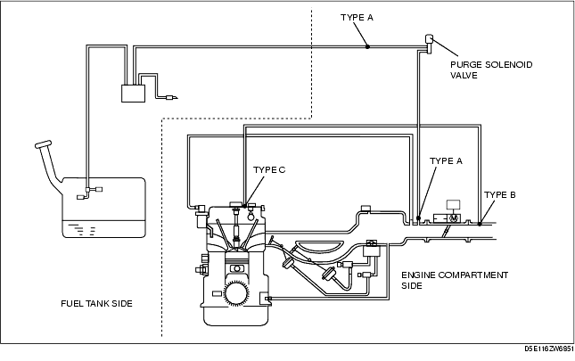
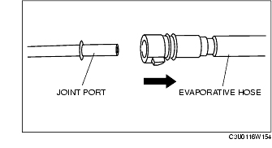
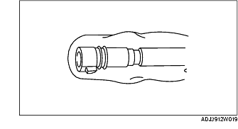
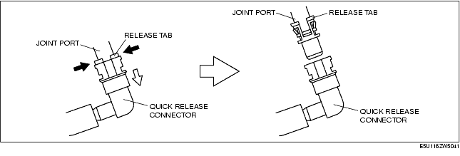
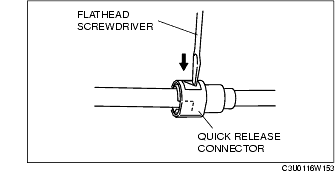
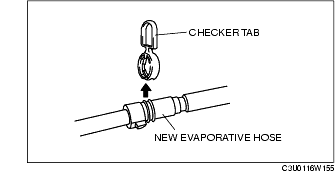
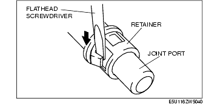
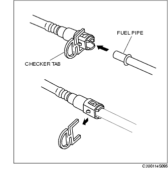

Workshop Manual ➭ ENGINE ➭ EMISSION SYSTEM[L8, LF] ➭ QUICK RELEASE CONNECTOR (EMISSION SYSTEM) REMOVAL/INSTALLATION [L8, LF]
QUICK RELEASE CONNECTOR (EMISSION SYSTEM) REMOVAL/INSTALLATION [L8, LF]
id0116a3805500
Quick Release Connector Type
• There are three types of quick release connectors. Verify the type and location, and install/remove properly.

Type A Removal
• The quick release connector may be damaged if the release tab is bent excessively. Do not expand the release tab over the stopper.
• The evaporative hose can be removed by pushing it to the joint port side to release the lock.
• The retainer is attached to the pipe even after the connector is disconnected.


- Cover the disconnected quick release connector and joint port with vinyl sheeting or a similar material to prevent it from scratches or dirt.

Type B Removal
• The retainer has two internal locking tabs which retain the joint port. Be sure that the squeezing place on the retainer is squeezed until it can be released from the joint port.
• The retainer is attached to the pipe even after the connector is disconnected.

- Cover the disconnected quick release connector and joint port with vinyl sheeting or a similar material to prevent it from becoming scratched or dirty.
Type C Removal
• When releasing the retainer locks, take extreme care not to damage the evaporative hose.
- Release the locks between the retainer and joint port by pressing each retainer lock one by one using a flathead screwdriver or a similar tool.

• The retainer is attached to the pipe even after the connector is disconnected.
- Cover the disconnected quick release connector and joint port with vinyl sheeting or a similar material to prevent it from becoming scratched or dirty.
Type A Installation
• If the quick release connector O-ring is damaged or has slipped, replace the evaporative hose.
• A checker tab is integrated with the quick release connector for new evaporative hoses. Remove the checker tab from the quick release connector after the connector is completely engaged with the joint port.

• If there is any malfunction, replace it with a new one.
-
Apply a small amount of clean engine oil to the sealing surface of the joint port.
-
Reconnect the evaporative hose straight to the joint port until a click is heard.
• If the quick release connector does not move at all, disconnect it, verify that the O-ring is not damaged or has not slipped, and then reconnect the quick release connector.
- Lightly pull and push the quick release connector a few times by hand, and then verify that it can move 2.0-3.0 mm {0.08-0.12 in} and is connected securely.
Type B Installation
• If the quick release connector O-ring is damaged or has slipped, replace the evaporative hose.
• When replacing with a new evaporative hose, disengage the release tabs from the join port.
• A checker tab is integrated with the quick release connector for new evaporative hoses. Remove the checker tab from the quick release connector after the connector is completely engaged with the joint port.

- When newly replacing the quick release connector, remove the release tab using the following procedure.
(1) Widen the retainer lock using a flathead screwdriver, then pull out the release tab from the joint port and remove it.

• If there is any malfunction, replace it with a new one.
-
Apply a small amount of clean engine oil to the sealing surface of the joint port.
-
Reconnect the quick release connector straight to the joint port until a click is heard.
• If the quick release connector does not move at all, disconnect it, verify that the O-ring is not damaged or has not slipped, and then reconnect the quick release connector.
- Lightly pull and push the quick release connector a few times by hand, and then verify that it is connected securely.
Type C Installation
• If the quick release connector O-ring is damaged or has slipped, replace the evaporative hose.
• When replacing with a new evaporative hose, disengage the release tabs from the join port.
• A checker tab is integrated with the quick release connector for new evaporative hoses. Remove the checker tab from the quick release connector after the connector is completely engaged with the joint port.

- When newly replacing the quick release connector, remove the release tab using the following procedure.
(1) Widen the retainer lock using a flathead screwdriver, then pull out the release tab from the joint port and remove it.

• If there is any malfunction, replace it with a new one.
-
Apply a small amount of clean engine oil to the sealing surface of the joint port.
-
Reconnect the quick release connector straight to the joint port until a click is heard.
• If the quick release connector does not move at all, disconnect it, verify that the O-ring is not damaged or has not slipped, and then reconnect the quick release connector.